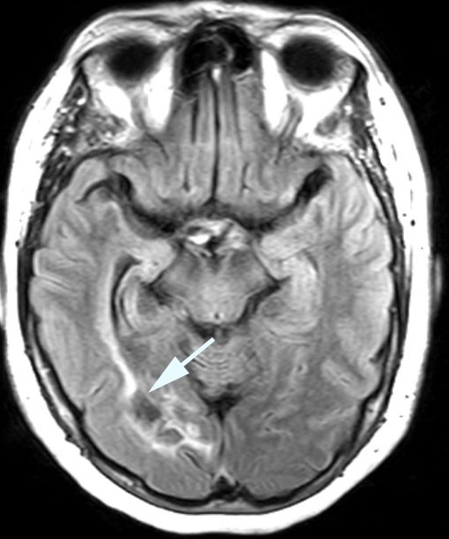

Optic Radiation Lesions
- Complete or incomplete homonymous hemianopia
-
With unilateral incomplete homonymous hemianopias, look for the following localizing features
- Superior wedge-shaped (“pie-in-the-sky”) defects indicate a lesion in the anterior temporal lobe (Meyer’s Loop)
- Superior-dominant defects indicate a lesion in the posterior temporal lobe
- Inferior-dominant defects indicate a lesion in the parietal lobe

-
Tip: temporal lobe lesions may be otherwise silent or cause seizures, memory loss, aphasia, or spatial agnosia
-
Tip: parietal lobe lesions may be otherwise silent, or cause seizures, contralateral paresthesias, complex sensory loss, visuospatial dysfunction, or hemispatial neglect
- Brain MRI usually shows the lesion

- Complete homonymous hemianopias localize to the retrochiasmal pathway but not to a particular location within that pathway
- Perform visual fields on patients whose visual complaints are unexplained by ocular abnormalities
- Look for localizing features on visual fields to differentiate between lesions of Meyer’s loop, posterior temporal lobe, and parietal lobe
- Use visual field results and accompanying neurologic manifestations to direct imaging attention to the expected location of the lesion
- Treatment depends on the cause